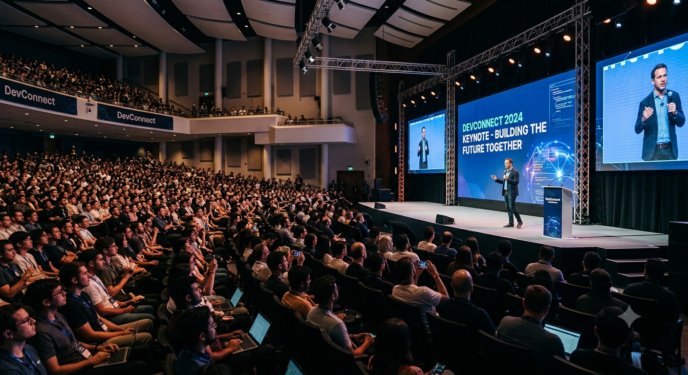
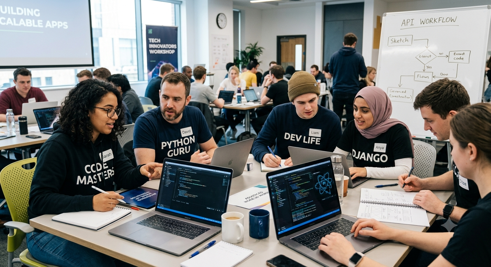
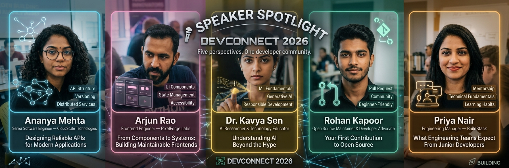

💻 Practical Technical Learning
Explore real development concepts, engineering practices, tools, and workflows through sessions delivered by experienced practitioners.
Build. Learn. Connect. 🚀
3rd Annual Technology Conference
📍 Science City Auditorium, Kolkata, IndiaJoin developers, students, engineers, designers, founders, and technology enthusiasts for two days of technical sessions, practical discussions, workshops, career conversations, and community networking.
Whether you're taking your first serious steps into software development or already working on real-world products, DevConnect 2026 is designed to give you ideas, knowledge, and connections that you can actually take beyond the conference.
Where developers meet ideas, technology meets people, and learning turns into action. 💻
DevConnect 2026 is a two-day technology conference bringing together students, developers, software engineers, designers, founders, educators, and technology enthusiasts from across India. The event is built around one simple idea: learning technology becomes far more valuable when you understand how it is actually used to build products, solve problems, collaborate with teams, and create opportunities.
Across two packed days, attendees will be able to attend technical sessions, explore modern development practices, listen to experienced engineers and technology professionals, participate in practical workshops, and meet people working on different kinds of projects. The conference covers topics ranging from web development and software engineering to artificial intelligence, developer tools, open source, and early-career opportunities.
Whether you're a student building your first serious project, a developer trying to improve your engineering skills, or someone curious about how modern technology teams work, DevConnect 2026 is designed to give you practical knowledge rather than just theoretical talks.
Expected attendance: 1,500+ developers, students, engineers, and technology enthusiasts
Conference format: 2 days • 6 technical tracks • 18 speakers • 30+ sessions

DevConnect began as a small community-driven developer gathering focused on helping students and early-career developers understand what happens beyond tutorials and classroom exercises. Over the years, the event has grown into a larger technology conference where people from different stages of their careers can meet, learn, exchange ideas, and discuss the realities of software development.
The 2026 edition is focused on practical engineering and the changing landscape of technology. Instead of concentrating only on individual programming languages or tools, the conference explores how developers think about problems, design systems, work with teams, use development tools, contribute to open source, and continuously improve their technical skills.
A major part of DevConnect is the interaction between attendees and speakers. Sessions are designed to encourage questions and discussion rather than simply presenting information from a stage. Workshops provide opportunities for deeper technical exploration, while career-focused sessions address topics that are particularly relevant to students and developers beginning their professional journey.
Explore real development concepts, engineering practices, tools, and workflows through sessions delivered by experienced practitioners.
Go beyond listening and explore practical development techniques through guided technical workshops and demonstrations.
Learn about internships, technical interviews, portfolios, open-source contributions, and the transition from student projects to professional software development.
Meet students, developers, engineers, founders, and technology enthusiasts working on different projects and following different career paths.
Discover how developers contribute to open-source projects, collaborate with communities, and build publicly visible technical work.
Discuss emerging technologies and changing expectations placed on developers as modern software development continues to evolve.
DevConnect 2026 is structured around several experiences that allow attendees to approach the conference from different angles. Some sessions are designed for deep technical learning, while others focus on hands-on experimentation, careers, communities, and the broader direction of the technology industry.
Spend time with experienced developers and engineers discussing the practical side of software development. Sessions will cover subjects such as frontend architecture, backend systems, APIs, databases, testing, developer workflows, performance, and engineering decision-making.
The emphasis is on understanding how technical decisions work in real projects rather than simply learning isolated programming concepts.
Workshops provide a more hands-on environment for participants who want to explore a concept in greater depth. These sessions may involve building small applications, working with development tools, analyzing code, understanding workflows, or experimenting with technologies used by modern engineering teams.
Participants are encouraged to ask questions, follow along with demonstrations, and take the concepts back into their own projects after the conference.
Starting a software engineering career involves more than learning a programming language. DevConnect's career sessions focus on the practical decisions students and early-career developers face: building meaningful projects, preparing a technical portfolio, approaching internships, improving interview skills, contributing to open source, and understanding what engineering teams actually look for in junior candidates.
Technology is built by people, and some of the most valuable conference experiences happen outside formal sessions. Networking areas will give attendees opportunities to talk with other developers, students, engineers, founders, speakers, and community members.
The goal isn't simply to collect contacts. It is to have genuine conversations, exchange ideas, discover interesting projects, and find people with whom you may continue learning or building after the event.
The Open Source Corner introduces attendees to the collaborative side of software development. Participants can learn how public repositories work, how developers communicate through issues and pull requests, how contributions are reviewed, and how beginners can gradually become useful contributors to projects.
It is designed especially for developers who have built personal projects but have not yet experienced collaborative development in a public codebase.
The technology landscape changes quickly, but not every new tool or trend deserves attention. This track focuses on understanding the broader direction of software development, including artificial intelligence, developer productivity, modern tooling, automation, and the skills developers may need as engineering workflows continue to change.
The emphasis is on understanding the technology rather than blindly following trends.

Learn something useful. Meet interesting people. Build something better.
DevConnect 2026 isn't designed to be another conference where attendees collect photographs and forget the sessions a week later. Every track is designed around practical knowledge, meaningful discussion, and ideas that participants can carry into their own projects, studies, careers, and developer communities.
Meet the engineers, developers, founders, researchers, and technology professionals joining DevConnect 2026. Our speakers come from different technical backgrounds and career stages, bringing practical experience from software development, product engineering, open source, artificial intelligence, developer tooling, and technology communities.
Senior Software Engineer — CloudScale Technologies
Ananya works on backend systems and distributed services used by high-traffic applications. She has spent more than eight years working with APIs, databases, cloud infrastructure, and reliability engineering.
Session: Designing Reliable APIs for Modern Applications
Ananya's session explores how developers can design APIs that remain maintainable as applications grow. She will discuss API structure, versioning, error handling, documentation, performance considerations, and common design mistakes.
Frontend Engineer — PixelForge Labs
Arjun specializes in modern frontend development and developer experience. His work focuses on building accessible, maintainable interfaces and improving the way frontend teams structure large applications.
Session: From Components to Systems: Building Maintainable Frontends
This session explores how individual UI components can gradually become a scalable frontend system. Arjun will discuss component design, reusable patterns, accessibility, state management, and the importance of consistent development practices.
AI Researcher & Technology Educator
Kavya works at the intersection of artificial intelligence, machine learning, and developer education. Her research and workshops focus on helping developers understand how modern AI systems work and where they can be applied responsibly.
Session: Understanding AI Beyond the Hype
The session looks at how developers should evaluate AI technologies instead of following every new trend. Topics include machine learning fundamentals, generative AI, practical applications, limitations, evaluation, and responsible development.
Open Source Maintainer & Developer Advocate
Rohan has contributed to several open-source projects and maintains developer tools used by programming communities. He regularly works with contributors from different countries and helps beginners make their first meaningful contributions to public repositories.
Session: Your First Contribution to Open Source
This practical session explains how developers can find beginner-friendly repositories, understand project documentation, work with issues, create pull requests, respond to reviews, and gradually become consistent contributors.
Engineering Manager — BuildStack
Priya has worked across software engineering and technical leadership roles. She focuses on engineering teams, mentorship, hiring, project planning, and helping developers grow from individual contributors into effective team members.
Session: What Engineering Teams Expect From Junior Developers
This career-focused session discusses what companies actually look for when hiring junior developers. Priya will cover technical fundamentals, projects, communication, debugging ability, teamwork, learning habits, and how students can demonstrate their skills beyond a list of technologies.
Five speakers. Five different perspectives. One developer community.
DevConnect 2026 brings together people who build software, research technology, maintain open-source projects, lead engineering teams, and help the next generation of developers grow.

DevConnect 2026 runs across two days with six technical tracks, practical workshops, career discussions, and community-focused sessions. Attendees can choose sessions based on their interests and create their own learning schedule throughout the conference.
Attendee registration, conference badges, welcome refreshments, and an introduction to DevConnect 2026.
A welcoming keynote discussing how developers can build strong technical foundations while adapting to rapidly changing engineering tools and workflows.
Speaker: Ananya Mehta
Explore practical approaches to component architecture, accessibility, state management, and maintainable frontend systems.
Speaker: Arjun Rao
Take a break, meet other attendees, exchange project ideas, and connect with developers from different backgrounds.
A practical workshop covering API structure, request and response design, error handling, documentation, and testing. Participants will build a small working API during the session.
Workshop level: Intermediate
Explore artificial intelligence from a practical developer perspective, including machine learning fundamentals, generative AI, real-world applications, limitations, and responsible development.
Speaker: Dr. Kavya Sen
Meet open-source contributors, maintainers, and developers interested in collaborative software development. Beginners are welcome.
Speaker: Rohan Kapoor
An informal end-of-day gathering for attendees, speakers, volunteers, and community partners.
Start the second day by meeting fellow attendees and discussing ideas from the previous day's sessions.
A practical discussion about technical fundamentals, projects, communication, debugging, teamwork, learning habits, internships, and what engineering teams look for in junior candidates.
Speaker: Priya Nair
Learn how developers turn an initial project idea into a working application by breaking requirements into smaller tasks, choosing appropriate technologies, designing features, and testing the final result.
Workshop level: Beginner to Intermediate
Take a break and enjoy lunch while connecting with peers and speakers.
A practical discussion about development environments, automation, debugging workflows, documentation, code quality, and tools that help developers spend more time solving problems.
Learn how students and early-career developers can present their projects, GitHub work, technical skills, and learning journey effectively when applying for internships and junior development roles.
A final conversation bringing together key lessons from the two-day conference and discussing how attendees can turn what they learned into continued projects, collaboration, and professional growth.
Day 1:
Day 2:
Total sessions: 30+
Technical tracks: 6
Welcome to the venue for DevConnect 2026. The conference will take place at Science City Auditorium, Kolkata, a well-known event and exhibition destination with convenient access from several parts of the city.
Whether you're travelling by metro, bus, train, taxi, or private vehicle, the venue can be reached through multiple transportation options.
Conference Dates: 21–22 November 2026
Venue Type: Technology Conference & Event Auditorium
The main conference sessions, keynote presentations, and selected technical talks will take place inside the auditorium complex.
Attendees travelling by metro can use the Kolkata Metro network and continue towards the Science City area using local transport or a short taxi/ride-hailing journey.
Several city bus routes operate through major roads connecting central and eastern parts of Kolkata. Attendees should check the latest route information before travelling.
Attendees arriving from outside Kolkata can travel to one of the city's major railway stations and continue to the venue using metro, bus, taxi, or ride-hailing services.
Taxi and app-based ride services are convenient options for reaching the venue directly. Enter Science City, Kolkata as the destination and allow additional travel time during peak traffic.
Visitors travelling by car or motorcycle should follow local traffic signs towards Science City. Parking availability may vary depending on event-day capacity.
Limited parking facilities will be available for conference attendees.
Visitors using private vehicles are encouraged to arrive early, as parking spaces may be limited during peak arrival hours.
Please follow the instructions of venue security and event volunteers when entering the parking area.
DevConnect 2026 aims to make the conference accessible and comfortable for all attendees.
The venue will provide accessible entry routes and seating arrangements where available. Attendees who require specific assistance should contact the event team before arriving so that appropriate arrangements can be made.
Accessibility assistance:
Attendees travelling from outside Kolkata are responsible for arranging their own accommodation.
A range of hotels, hostels, guest houses, and other accommodation options are available across Kolkata and nearby areas.
For convenience, attendees are encouraged to choose accommodation with easy access to major transport routes.
Conference Entry: Registered attendees must carry their conference registration confirmation.
Identification: A valid photo ID may be required during registration.
Registration Desk: The registration desk will open before the first scheduled session each day.
Arrival Time: Attendees are encouraged to arrive at least 30 minutes before their first session.
Weather: November is generally comfortable in Kolkata, but attendees should check the weather forecast before travelling.
Emergency: Follow instructions from venue staff and conference volunteers in case of an emergency.
Yes. Limited parking facilities will be available, subject to capacity.
Yes. The venue can be reached using a combination of metro, bus, taxi, and other local transportation options.
Yes. Arriving early is recommended, particularly for the opening session and morning registration.
A valid photo ID may be requested during registration, so attendees should carry one.
Yes. Attendees requiring assistance should contact the event team before the conference.
📧 DevConnect 2026 Event Team
Secure your place at DevConnect 2026 by completing the registration form below.
Registration is open to students, developers, software engineers, designers, founders, educators, and technology enthusiasts.
Conference Dates: 21–22 November 2026
Venue: Science City Auditorium, Kolkata
Have questions about DevConnect 2026? Find answers to some of the most common questions about registration, attendance, sessions, workshops, conference access, and participation.
Complete the online registration form and submit your details. A registration confirmation will be provided after your submission is processed.
DevConnect 2026 registration is free for students and community attendees. Some optional workshops may have limited capacity.
On-site registration may be available if seats remain. Attendees are strongly encouraged to register online in advance.
Yes. Contact the DevConnect event team with your registration details if you need to update important information.
No. Attendees can register for either individual conference day or both days.
Most conference sessions are open to registered attendees. Some hands-on workshops may require separate registration because seats are limited.
Selected sessions may be recorded and made available to registered attendees after the conference.
Late entry may be permitted when it does not disrupt an ongoing session. Attendees should arrive before their scheduled session whenever possible.
Workshop difficulty varies. Each workshop will indicate its expected experience level so attendees can choose an appropriate session.
Attendees participating in hands-on technical workshops are encouraged to bring a laptop with the required development tools installed.
No. Workshop participation depends on availability and capacity.
DevConnect is open to:
There is no requirement to be an experienced developer to attend the conference.
Conference registration information must be accurate and up to date.
If you can no longer attend the conference, please inform the event team as early as possible so that your place can potentially be offered to another attendee.
Photography and video recording may take place during DevConnect 2026 for documentation and promotional purposes.
If you have specific concerns about being photographed or recorded, contact the event team before the conference.
DevConnect is intended to be a respectful and inclusive environment for learning, collaboration, and professional networking.
All attendees, speakers, volunteers, organizers, and partners are expected to behave professionally and treat others with respect.
Harassment, intimidation, discrimination, disruptive behavior, or inappropriate conduct will not be tolerated.
Concerns about attendee behavior should be reported to the DevConnect event team.
Information submitted through the registration process will be used for conference administration, communication, attendance management, and related event activities.
Attendee information should be handled responsibly and should not be shared publicly without appropriate permission.
Conference schedules, speakers, workshops, and other event details may change due to circumstances beyond the organizers' control.
DevConnect organizers reserve the right to modify the programme when necessary and will communicate significant changes to registered attendees.
If your question isn't answered above, contact the DevConnect 2026 event team.
📧 hello@devconnect2026.example
Return to registration:
🎟️ Register for DevConnect 2026
Return to schedule:
Return to top: